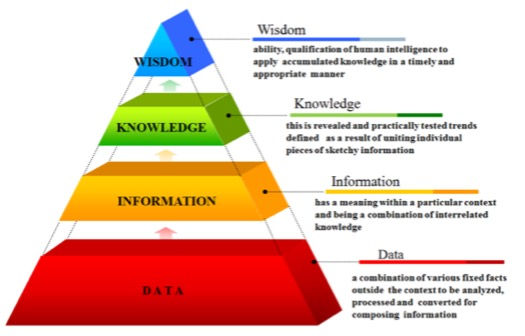

"The word definition: data, information, knowledge and wisdom?"
Data is a collection of facts in a row or unorganized form
Information is easier to measure, visualise and analyse data for a specific purpose
Knowledge is connected to other pieces help us to understand
how to apply information to achieve our goal
Wisdom is knowledge applied in action

"What is the relationship between data, information and knowledge?"
Each step up the pyramid from data-information-knowledge-wisdom answers questions about
initial data and add values to it. The more we enrich our data with meaning and context,
the more knowledge and insights we get out of it.At the top of the pyramid,we have turned
the knowledge and insights into a learning experience that guides our actions.
"What is Quantitative Data?"
Quantitative data focuses on numbers, metrics, and the formulation of facts.
The numbers you gather from your quantitative research will be the foundation for strong business decisions
in the future. Ways to gather quantitative data include conducting A/B testing, closed-question surveys, and web analytics.
"What is Qualitative data?"
Qualitative data focuses on the voice of your customers, asking open-ended questions,
and developing ideas. Qualitative data reveals customer opinions, values, and beliefs. This data can help you
define problems and areas for improvement. Ways to gather qualitative data include conducting focus groups or
one-on-one interviews that ask open-ended questions.
"What is a mixed-methods approach?"
A mixed-methods approach can offer a powerful path towards a deeper understanding of all aspects of your business.
Quantitative data provides you the what, but qualitative data provides you the why.
"When you focus only on qualitative results, you risk having a large number of outcomes with too many details or irrelevant conclusions"
"When you concentrate solely on quantitative results, you often end up with very broad conclusions without sufficient context"
When bringing quantitative and qualitative data together, you are closing all the gaps.
"What is a good example of mixed-methods approach?"
Google Analytics + User Interviews
Google Analytics offers a wealth of quantitative data, such as how many people visited your site, how they got there,
and how long they stayed. The information is incredibly helpful and extremely detailed, but without thoughtful interpretation,
it’s useless. In many cases, Google Analytics’ quantitative data will help you pinpoint exactly where your problem lies.
But only qualitative data can identify the cause of the issue. Why is that text box causing people to leave your site?
Is the field too difficult to fill out? You’ll obtain this information through interviews, co-browsing sessions or feedback tools.